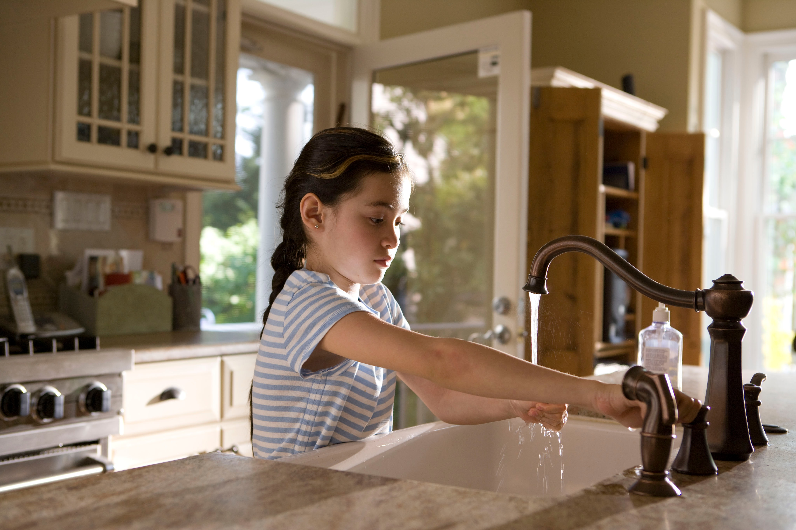

Click to learn more about corona prevention.
1. Keep alcohol-based hand sanitizers out of children’s reach. Teach them how to apply the sanitizer and monitor its use.
2. Apply a coin-sized amount on your hands. There is no need to use a large amount of the product.
3. Avoid touching your eyes, mouth and nose immediately after using an alcohol-based hand sanitizer, as it can cause irritation.
4. Hand sanitizers recommended to protect against COVID-19 are alcohol-based and therefore can be flammable. Do not use before handling fire or cooking.
5. Under no circumstance, drink or let children swallow an alcohol-based hand sanitizer. It can be poisonous.
6. Remember that washing your hands with soap and water is also effective against COVID-19.